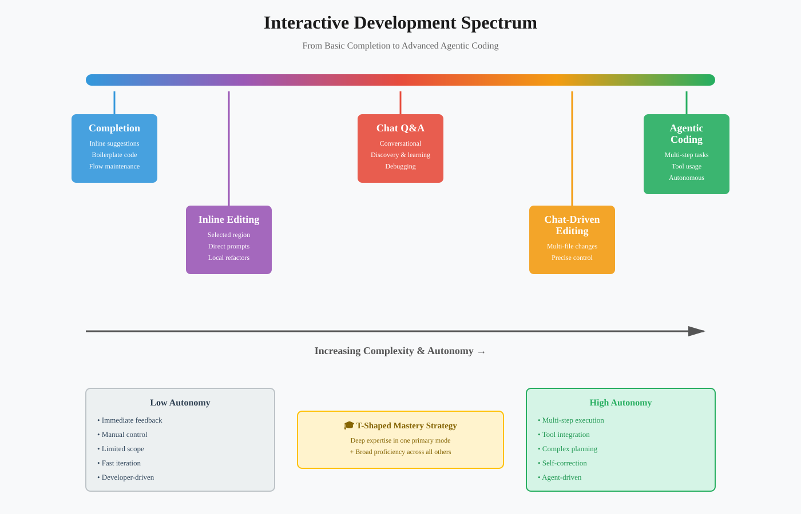
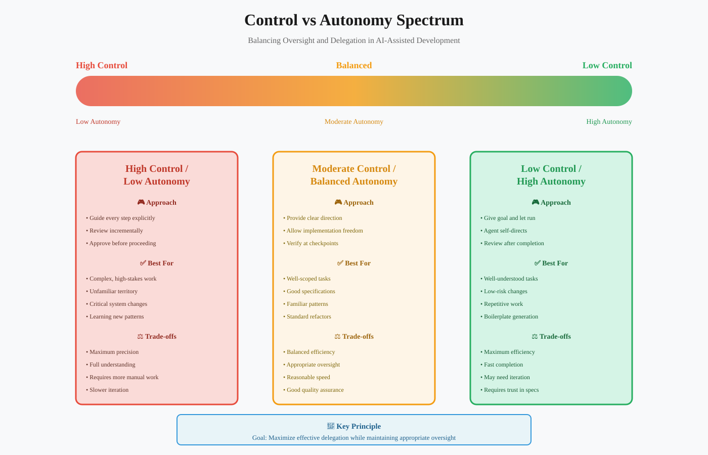
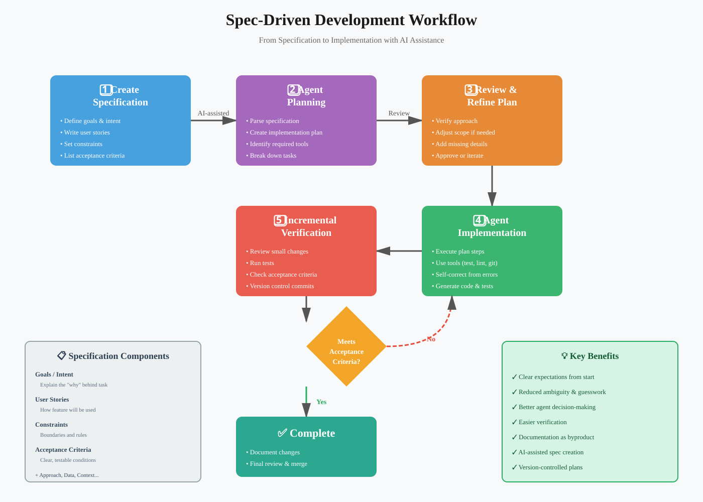
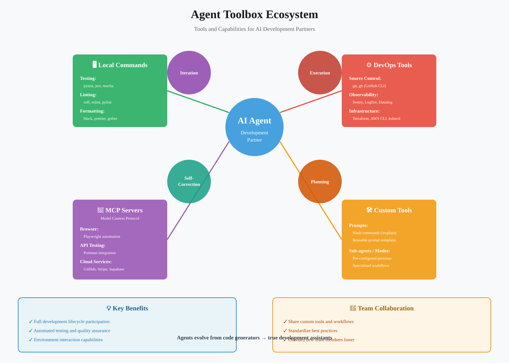

Interactive Coding, Control & Spec-Driven Development
A comprehensive guide to mastering interactive AI-assisted development through dynamic collaboration, controlled workflows, and specification-driven practices.
📋 Quick Navigation
- Overview
- The Interactive Development Model
- The Spectrum of Interactive Modalities
- Exercising Control
- The Power of Planning and Specification
- Agents as Development Partners
- Google Colab Demonstrations
- References & Further Reading
🎯 Overview
Interactive AI-assisted development transforms the coding experience from basic autocomplete to sophisticated collaboration. This lesson explores practical workflows for solo and team development, focusing on making AI agents reliable, productive partners in the development process.
Core Learning Objectives:
- Efficient and Reliable Development: Master workflows that produce high-quality results predictably
- Delegation with Confidence: Learn to steer agents effectively for high-level design and strategy
- Enhanced Capabilities: Use AI to tackle complex features, migrations, and bug fixes with greater speed and accuracy
Foundation Principle:
Effective context engineering is the foundation for productive interactive coding. A well-prepared context, rich with project rules, documentation, and goals, makes every interaction dramatically more effective.
🔄 The Interactive Development Model
Interactive AI-assisted development creates dynamic, controlled, and efficient collaboration between developer and agent. By mastering different interaction modes and leading with clear specifications, you can accelerate complex tasks while maintaining full authority over the development process.
Key Transformation:
This approach transforms the AI from a simple tool that guesses your intent into a powerful collaborator that executes it with precision.
Three Key Outcomes:
- Efficient Development: Predictable, high-quality results through proven workflows
- Confident Delegation: Effective agent steering for strategic focus
- Enhanced Capabilities: Partnership for tackling complex development challenges

🎨 The Spectrum of Interactive Modalities
Interactive AI is not a single tool but a spectrum of complementary capabilities. The most powerful approach combines multiple modalities, selecting the right one for each specific task.
1️⃣ Completion
Definition:
The most basic mode providing inline, near-cursor suggestions as you type.
Best Use Cases:
- Boilerplate Generation: Creating repetitive code structures
- Statement Completion: Finishing simple code statements
- Flow Maintenance: Completing thoughts without breaking concentration
Key Characteristic:
Minimal disruption to coding flow with instant, context-aware suggestions.
2️⃣ Inline Editing
Definition:
Modify selected code regions based on specific, direct prompts.
Best Use Cases:
- Localized Refactors: Converting loop types (for-loop to list comprehension)
- Code Transformations: Changing data structures or patterns
- Style Updates: Applying formatting or naming conventions
Key Characteristic:
Low-risk, clearly-defined scope with immediate visual feedback.
3️⃣ Chat Q&A
Definition:
Conversational exploration with the agent through a chat interface.
Best Use Cases:
- Codebase Discovery: Understanding unfamiliar code sections
- Debugging: Analyzing stack traces and error messages
- Learning: Asking "how do I use library X to achieve Y?"
- API Exploration: Understanding third-party library capabilities
Key Characteristic:
Invaluable for discovery, learning, and problem-solving discussions.
4️⃣ Chat-Driven Editing
Definition:
Using chat interface to drive precise, often multi-file, constrained changes.
Best Use Cases:
- Function Renaming: Update function name across entire project
- Documentation Updates: Synchronize code changes with documentation
- Refactoring Tasks: Multi-file but well-scoped transformations
- API Migrations: Updating deprecated API calls project-wide
Key Characteristic:
Bridges the gap between simple inline edits and full agentic tasks.
5️⃣ Agentic Coding
Definition:
Most advanced modality where you delegate multi-step, complex tasks to an autonomous agent.
Best Use Cases:
- End-to-End Features: Complete feature implementation from specification
- Complex Migrations: Large-scale codebase transformations
- Multi-System Integration: Coordinating changes across multiple services
- Comprehensive Refactors: Architecture-level code improvements
Agent Capabilities:
- Planning: Creating execution plans for complex tasks
- Tool Usage: Accessing command line, APIs, and MCP servers
- Iteration: Self-correcting based on test results and feedback
Key Characteristic:
Autonomous execution with planning, tool usage, and iterative refinement.
🎓 T-Shaped Mastery Approach
Strategy:
Develop deep expertise in one primary mode that fits your workflow, while maintaining broad proficiency in others for situational use.
Benefits:
- Efficiency: Expert-level speed in your primary modality
- Flexibility: Ability to switch modes when appropriate
- Optimization: Always using the right tool for the job
🎮 Exercising Control
The central challenge of interactive coding is steering the agent effectively. At its best, this is deliberate, orchestrated collaboration with full control over every step.

The Control-Autonomy Spectrum
Low Control / High Autonomy:
- Approach: Give the agent a goal and let it run freely
- Best For: Well-understood, low-risk tasks
- Trade-off: Efficient but may require more iteration to align with intent
Moderate Control / Balanced Autonomy:
- Approach: Provide clear direction with implementation freedom
- Best For: Well-scoped tasks with good specifications
- Trade-off: Balance between efficiency and oversight
High Control / Low Autonomy:
- Approach: Guide every step explicitly with incremental approval
- Best For: Complex, high-stakes work or unfamiliar territory
- Trade-off: Maximum precision but requires more manual work
Key Principle:
The goal is not to maximize autonomy—it is to maximize effective delegation while maintaining appropriate oversight for the situation.
📏 Manage the Scope of Change
Deliberate Scope Selection:
Before beginning any task, consciously decide on its scope from the spectrum:
- Small Localised Changes: Single-line modifications or minor adjustments
- Multi-File Refactors: Coordinated changes across related files
- Full Features or Migrations: End-to-end implementations or large-scale transformations
Scope-Based Strategy:
Larger scope demands:
- Clear Specifications: Detailed requirements and acceptance criteria
- Strong Version Control: Rigorous branching and commit discipline
- Incremental Verification: Step-by-step validation of progress
Default Approach:
When in doubt, start smaller to reduce risk and complexity.
🔐 Use Version Control & Checkpoints
Version Control as Safety Net:
Established developer practices become even more critical at AI-enabled speed and scale.
Version Control Best Practices:
- Topic Branches: Isolate changes for focused development
- Frequent Commits: Create clean, reviewable history with easy rollback points
- Descriptive Messages: Document the "why" behind each change
- Branch Strategy: Use feature branches for experimental or AI-generated code
Checkpointing Alternative:
Many IDEs offer lightweight checkpointing mechanisms to:
- Save State: Quickly preserve current work state
- Enable Experimentation: Test risky changes with easy reversion
- Reduce Overhead: Lighter than full commits for rapid iteration
✅ Review and Verify Incrementally
Iterative Loop Process:
Work in short, tight, iterative cycles rather than large, unchecked chunks:
- Complete Small Step: Finish a well-defined, focused task
- Review Output: Carefully examine agent's work for correctness
- Verify Alignment: Ensure work matches your intent and requirements
- Test Function: Validate behavior before proceeding
Benefits:
- Early Course Correction: Adjust agent direction before significant drift
- Prevent Rework: Catch misalignment early to avoid extensive corrections
- Maintain Understanding: Stay connected to codebase changes throughout
🪟 Manage the Context Window
Context Window Fundamentals:
The context window is the limit on how much text an agent can process at once.
Typical Sizes:
- Standard Models: 100,000 to 200,000 tokens
- Extended Models: Up to 1,000,000 tokens (e.g., Gemini)
- Practical Limit: Despite size, using entire window has costs
Context Window Challenges:
- Attention Degradation: Model attention decreases as window fills
- Hard Limits: Once full, no further work is possible
- Lossy Compaction: Summarization inevitably loses information
Proactive Management Strategies:
- Work Incrementally: Use small steps and monitor window usage
- Start Fresh: Begin new conversation when significant portion is used
- Controlled Compaction: Trigger summarization yourself to retain critical details
- Reiterate Key Points: Immediately restate essential information after compaction
📝 The Power of Planning and Specification
The single most effective way to work with an AI agent is to lead with a specification. Clear specs transform interaction from "vibe-driven" guesswork to precise, engineering-driven development.

🎯 Why Specifications Matter
Transformation:
A clear spec gives the agent the information needed to use its intelligence effectively, rather than inventing things or making flawed assumptions.
Spec Flexibility:
Format should match task scope:
- Small Changes: Clear, explicit, well-organized prompt
- Large Changes: Dedicated file (Markdown PRD or implementation plan)
File-Based Specs Advantages:
- Superior Structure: Organized, hierarchical information
- Easier Iteration: Collaborative refinement with agent assistance
- Version Control: Track spec evolution alongside code
📉 Lowering Documentation Overhead
Traditional Challenge:
Detailed documentation was high-overhead and threatened development velocity.
AI-Enabled Solution:
Use agents to draft initial versions of PRDs, implementation plans, or technical specifications, then iterate collaboratively.
Result:
Spec-driven development becomes efficient—you get benefits of clear specifications without traditional cost.
🏗️ Spec-Driven Development in Practice
Definition:
Give the agent a rich, precise, and complete specification to work with, minimizing ambiguity.
High-Quality Specification Components:
Goals / Intent:
- Purpose: Explain the "why" behind the task
- Benefit: Agent makes better, context-aware decisions
- Example: "Enable users to export data for regulatory compliance reporting"
User Stories:
- Purpose: Describe how features will be used
- Benefit: Agent understands end-user perspective
- Example: "As a compliance officer, I need to export audit logs in CSV format so that I can submit them to regulators"
Constraints:
- Purpose: Define boundaries and rules
- Benefit: Prevent violations of requirements or best practices
- Example: "Must not expose PII in export, must complete within 30 seconds for datasets under 10MB"
Acceptance Criteria:
- Purpose: Provide clear, testable conditions for "done"
- Benefit: Concrete target for agent and self-verification mechanism
- Example: "Export button appears on dashboard, CSV includes all required fields, downloads trigger immediately"
Relevant Information and Data:
- Purpose: Point to necessary context
- Benefit: Informs implementation with existing patterns and standards
- Example: "See user_management.py for similar export functionality, refer to GDPR_guidelines.md for PII handling"
Approach / Methodology:
- Purpose: Guidance on implementation method
- Benefit: Ensures consistency with project patterns
- Example: "Use existing ExportService class, implement as async background job, follow repository pattern"
Flexibility Note:
These components are a menu of options—select elements that work best for you and the specific task. Find your own style.
📋 Plans as Guiding Artefacts
Concrete Step-by-Step Plans:
Invaluable tools for guiding agents through complex tasks.
Plan Types by Scope:
Large Projects / Features:
- Format: Version-controlled file (plan.md, todos.md)
- Nature: Living document updated as work progresses
- Benefit: Clear implementation history and progress tracking
Smaller Implementation Tasks:
- Format: Ephemeral session-specific to-do list
- Nature: Temporary guidance for immediate work
- Benefit: Focused direction without maintenance overhead
Matching Strategy:
Match planning artifact complexity to task complexity—overhead should scale with scope.
🛠️ Agents as Development Partners
Modern agents interact with their environment, primarily through command line. They execute any command or script available to you, participating fully in the development lifecycle. This ability to do things elevates agents from code generators to true assistants.

🧰 The Agent's Toolbox
Local Commands:
Run development tools and analyze their output:
- Testing: Execute test suites (pytest, jest, mocha)
- Linting: Check code quality (ruff, eslint, pylint)
- Formatting: Apply code style (black, prettier, gofmt)
- Static Analysis: Type checking and code analysis (mypy, typescript, clippy)
Self-Correction Capability:
Agents receive tool output and use it to correct their own work.
"DevOps" Tasks:
Perform operational tasks supporting development:
- Source Control: Git operations, GitHub CLI (git, gh)
- Observability: Query monitoring platforms (Sentry, Logfire, Datadog)
- Infrastructure: Manage cloud resources (Terraform, AWS CLI, kubectl)
- Deployment: CI/CD pipeline operations
MCP Servers:
Model Context Protocol (MCP) servers provide standardized agent-service interaction.
Popular MCP Server Examples:
- Browser Interaction: Playwright for web testing and automation
- API Testing: Postman for API validation
- Cloud Services: GitHub, Stripe, Supabase integration
- File Systems: MarkItDown-MCP for universal file access
- Observability: Pydantic Logfire for structured logging
🔧 Custom Tools, Prompts, and Sub-agents
Custom Development for Reusability:
Codify repeatable processes for team collaboration and pattern sharing.
Tools:
- Definition: Allow agents to perform actions (run code, API calls, file system operations)
- Implementation: Command-line executables, scripts, or MCP servers
- Example: Custom script to validate API responses against OpenAPI spec
Prompts (Slash Commands):
- Definition: Saved, reusable prompts invoked quickly (e.g., /explain, /test, /document)
- Implementation: Most products provide facilities for saving prompts
- Example: "/refactor for readability" prompt with specific style guidelines
Sub-agents or Modes:
- Definition: Pre-configured prompts that prime agents to work in particular ways
- Implementation: Claude Code sub-agents, Visual Studio Code modes
- Example: "Security Review" mode that focuses on finding vulnerabilities
- Benefit: Powerful mechanism for reusing and sharing workflows and expertise
🤝 Collaborative Development
Team Benefits:
Custom tools, prompts, and sub-agents enable:
- Pattern Sharing: Distribute best practices across team
- Consistency: Standardize approaches to common tasks
- Onboarding: New team members access collective knowledge
- Efficiency: Reduce repetitive prompt engineering
🔬 Google Colab Demonstrations
Explore interactive demonstrations of AI-assisted development workflows:
📓 Interactive Coding Workflows Notebook

Demonstrations:
- Setting up AI coding assistants in Colab environment
- Examples of different interactive modalities
- Context window management techniques
- Incremental verification workflows
📓 Spec-Driven Development Examples

Demonstrations:
- Creating specifications for different task scopes
- Agent-assisted spec drafting
- Implementation from specifications
- Iterative refinement workflows
📓 Agent Tooling Integration

Demonstrations:
- Running tests and analyzing results
- Git workflow automation
- MCP server integration examples
- Custom tool creation
📚 References & Further Reading
AI Coding Modalities
- I Argue With My AI Pair Programmer, and It Makes My Code Better - Collaborative debugging strategies with AI assistants
- How can I use AI without losing my core problem-solving skills? - Maintaining developer skills in AI-assisted workflows
- Levels of Autonomy for AI Agents - Framework for understanding agent autonomy levels
- The AI Coding Spectrum: 6 Levels of Assistance Developers Should Know - Comprehensive overview of AI assistance capabilities
- Code completions with GitHub Copilot in VS Code - Practical guide to completion-based coding
- Cursor Tab - Documentation for advanced completion features
Exercising Control
- You Can Just Do Things - Philosophy of proactive development with AI tools
- What is "Vibe Coding" and when should I use it? - Understanding exploratory coding with AI
- Use trash Instead of rm for YOLO peace of mind - Safety practices for AI-assisted file operations
- Break Down Complex AI-Generated Code into Atomic Functions - Strategies for managing AI output
- Build Checkpoints for Your Agent with Neon Snapshots - Database checkpoint strategies
- Attribute Git Commits to AI Agents - Version control practices for AI collaboration
- Refine your initial prompt instead of course-correcting - Prompt engineering efficiency
- Git Best Practices and AI-Driven Development - Version control workflows for AI-assisted coding
Spec-Driven Development
- Make Dictation Your Prompting Superpower - Voice-based specification creation
- Spec-First Development For API → MCP - API design with specification-driven approach
- Product Thinking for Agentic Development - Product management principles for AI projects
- GitHub Spec-Kit - Tools and templates for specification-driven development
- Using Markdown as a programming language when building with AI - Markdown for executable specifications
- Kiro and the future of AI spec-driven software development - Future directions in spec-driven AI coding
- Turning Cursor into a task-based AI coding system - Task management with AI assistants
- Specflow - Behavior-driven development with specifications
Agentic Tool Use
- MCP vs. CLI Benchmarking - Performance comparison of tool integration approaches
- AI Coding Trace Dissections - Understanding agent decision-making processes
- Enable universal file access for your AI coding agent with MarkItDown-MCP - File system integration
- The 3 Architectures for Reusable LLM Tools - Design patterns for AI tool development
- AI-Powered Observability with Pydantic Logfire MCP - Monitoring and debugging AI systems
- How AI Coding Agents Work - Technical deep dive into agent architecture
- FastMCP - High-performance MCP server framework
- How to build a simple agentic AI server with MCP - Practical guide to MCP server development
Related ArXiv Papers
- arXiv:2410.xxxxx - Empirical Study of AI-Assisted Software Development Workflows
- arXiv:2409.xxxxx - Specification-Driven Development with Large Language Models
- arXiv:2408.xxxxx - Context Window Management in Long-Form Code Generation
Hugging Face Models
- 🤗 CodeLlama-Instruct - Instruction-tuned models for code generation
- 🤗 StarCoder2 - Advanced code completion and generation models
- 🤗 WizardCoder - High-performance coding assistant models
Document Information:
- Created: October 2025
- Version: 1.0
- Authors: Eleanor Berger & Isaac Flath
- Course: Elite AI Assisted Coding — Cohort 1
- License: Educational Use
This documentation is designed for immediate deployment to MkDocs with Material theme. All formatting adheres to professional standards for AI learners, engineers, and researchers.